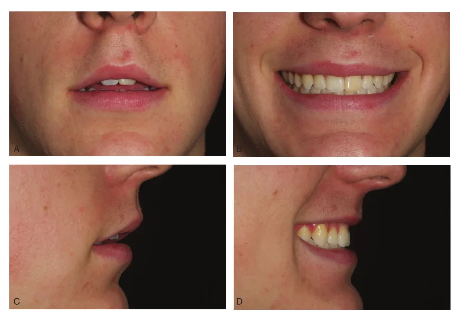

نسخه استخراجشده؛ ترجمه یا تأیید علمی انجام نشده است. وضعیت: captured
مرحلهی اول: نمای فرونتال کل صورت. مخمل سیاه روی دیوار نصب میشود تا سایههای ناشی از فلاش را حذف کند. بیمار روی صندلی گردان و ۲ فوت جلوتر از دیوار مینشیند.
کادر از بالای سر تا استخوان ترقوه را میگیرد و هر دو گوش باید در کادر باشند. اگر موی بلند گوشها را پوشانده، بیمار موها را پشت گوش میبرد.
چرا گوشها؟ دلیلش این است: «نمایان بودن گوشها به همراستاسازی با تحلیل سفالومتری لترال کمک میکند»، اگر چنین تحلیلی لازم شود. یعنی این جزئیات ظاهری، بعداً به یک کاربرد تشخیصی وصل میشود.
تنظیمات نمای کل صورت: فاصلهی کاری حدود ۱۵۰ تا ۲۰۰ سانتیمتر (۶۰ تا ۸۰ اینچ) با تغییرپذیری میان برندها، دیافراگم میان f/۵٫۶ تا f/۸، در دوربین کانن سرعت شاتر یک صد و بیست و پنجم ثانیه، فوکوس روی چشمهای بیمار.
سه حالت فرونتال به این ترتیب گرفته میشود:
سپس بیمار ۹۰ درجه میچرخد و همان سه حالت در نمای پروفایل تکرار میشود؛ موی بلند باید همچنان پشت گوش بماند.
و برای نمای نزدیک لب: فاصلهی کاری به ۲۵ تا ۴۰ سانتیمتر کوتاه میشود، دیافراگم تا f/۳۲ بسته میشود و سرعت شاتر همان یک صد و بیست و پنجم میماند.
و یک خطای بصری که باید بشناسی: دوربینی که چند درجه بالاتر از پلن اکلوزال قرار گیرد، «ظاهری از انحنا در لبهی انسیزال ماگزیلا میسازد که منحنی مشابهی با لب پایین دارد». این توهم در فاز جمعآوری داده مطلوب نیست — برای عکس کالیبره، دوربین باید موازی پلن اکلوزال باشد.

برای عکس داخلدهانی، «حداکثر رتراکشن لب و موکوزای باکال ضروری است» تا وضوح، ترکیببندی و نوردهی بهینه شود.
چرا پلاستیک شفاف و نه فلز؟ «رتراکتورهای پلاستیکی شفاف بر فلزی ترجیح دارند چون اگر در تصویر بیفتند کمتر حواسپرتکننده هستند.»
و رتراکتورها را میتوانی خودت اصلاح کنی: با دیسک جداکننده روی میکروموتور (سرعت پایین) و تجهیزات پولیش آکریل دنچر:
و یک نکتهی عملی که هزینهی اشتباه را کم میکند: «پیش از تغییر دادن رتراکتورها، اکیداً توصیه میشود محل برشهای موردنظر با ماژیک علامتگذاری شود» — و توجه کن که تغییرات برای رتراکتور راست و چپ متفاوت است.
وضعیت بیمار برای عکسهای داخلدهانی: همهی عکسهای داخلدهانی روی یونیت دندانپزشکی گرفته میشوند؛ یونیت را میتوان خواباند تا بیمار به پشت باشد و عکاس کنارش بایستد. نمای فرونتال رتراکته دندانهای ماگزیلا و مندیبل را در اکلوژن و بدون آینه در کادر میگیرد، با همان فاصلهی کاری نمای نزدیک لب.
آینهی سطح اول (FSM) — و چرا آینهی معمولی به درد نمیخورد. آینههای سطح اول «وضوح تصویر خوبی بدون گوستینگ و تصویر دوگانه تولید میکنند» — چیزی که آینههای سطح دوم (سطح پشتی) میسازند. پوششهای مقاوم به خش، با کمی مراقبت، عمر طولانی میدهند.
و پروتکل مراقبت، که یک ممنوعیت قاطع دارد: آینههای دندانی و رتراکتورهای پلاستیکی اتوکلاوپذیر هستند. اما «پس از استفادهی داخلدهانی، هرگز آینهها را در دستگاه اولتراسونیک نگذار». بهجای آن: شستوشو با آب و صابون، سپس پیچیدن جداگانه در گاز ۴ در ۴ و بستهبندی برای اتوکلاو.
و برای برجسته کردن لبهی انسیزال: یک کنتراستر سیاه پشت دندانها گذاشته میشود تا در برابر رنگ دندان کنتراست بسازد و کانتور لبههای انسیزال را برجسته کند. رتراکتور تکبال اصلاحشده هم لب بالا را کنار میزند تا انسیزورهای ماگزیلا و لثه دیده شوند.